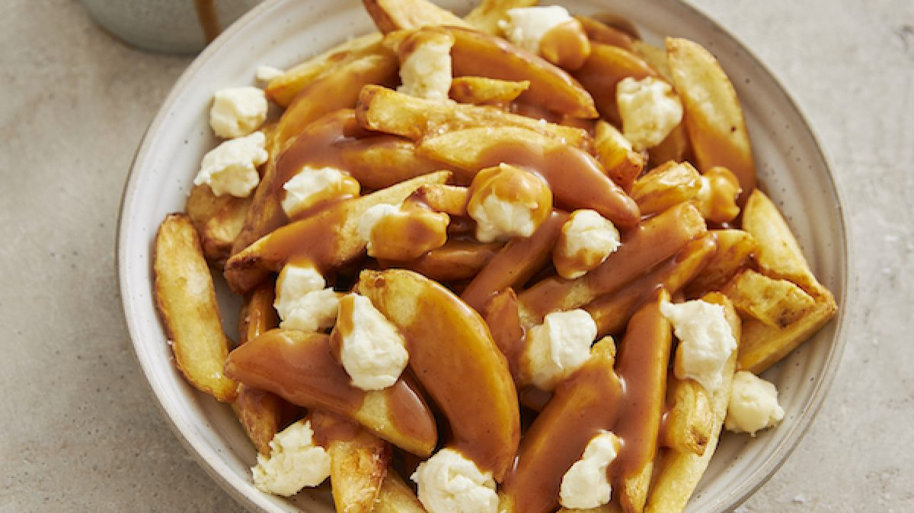

Poutine

Description:
Poutine is a popular Canadian dish that consists of crispy French fries topped with fresh cheese curds and
smothered in rich, brown gravy. The fries provide a crunchy base, while the cheese curds add a slightly squeaky
texture that melts slightly under the heat. The warm, savory gravy ties everything together, creating a
deliciously comforting and indulgent meal.
Ingredients:
Steps:
- Heat the oil in a large pot or deep fryer to 350°F (175°C).
- Add the fries in small batches to avoid overcrowding the pot. Fry until golden and crispy, about 5 to 7
minutes.
- Drain the fries on paper towels and season them immediately with salt.
- In a small saucepan, melt the butter over medium heat.
- Add the flour and stir well to create a roux, cooking for about 2 minutes until it’s lightly browned.
- Gradually whisk in the broth, stirring constantly to prevent lumps. Bring the mixture to a simmer and cook
until the gravy thickens, about 5 minutes.
- If using, add the Worcestershire sauce for extra flavor. Season with salt and pepper to taste.
- Place the hot fries on a serving plate.
- Scatter the cheese curds evenly over the fries.
- Pour the hot gravy over the fries and cheese curds, allowing the cheese to soften slightly under the heat.